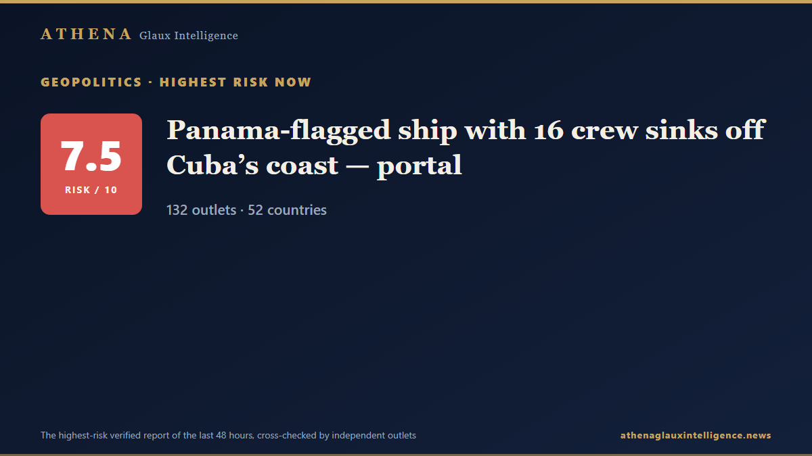
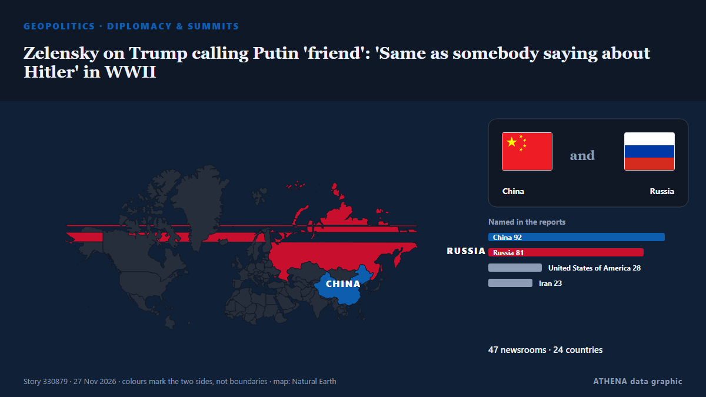

Κίνδυνος 7.5Αυξημένος
Γεωπολιτική, οικονομία και θαλάσσια ναυτιλία — διασταυρωμένα σε πολλές χώρες.
Γεωπολιτική
Όλη η Γεωπολιτική >Υψηλότερος κίνδυνος τώρα

Αυξανόμενος κίνδυνοςΑύξηση τις τελευταίες 24 ώρες
- Levski Sofia coach says Marseille fan clashes 'unacceptable' as five hospitalisedΚίνδυνος 0.0 → 4.6
- Trump says he asked Putin to ‘pull back’ military aggression throughout EuropeΚίνδυνος 2.5 → 7.3
- Araghchi rejects any Iran link to attack in KuwaitΚίνδυνος 1.2 → 5.7
Ναυτιλία & ναυσιπλοϊα
Γραφείο Ναυτιλίας >Υψηλότερος κίνδυνος τώρα
Κίνδυνος 7.4Αυξημένος
Saudi-led coalition destroys 50 Iran-Backed Houthi military targets in Yemen
Δείτε τα στοιχεία ›
Πίνακας παρακολούθησηςΠεράσματα, λιμάνια και άλλες ναυτιλιακές αναφορές
- Strait of HormuzΔιαταραχήattack / strike · risk 7.1 · 139 newsrooms (72 h)
- Kerch Strait / Black SeaΔιαταραχήattack / strike · risk 7.5 · 135 newsrooms (72 h)
- SingaporeΔιαταραχήattack / strike · risk 7.1 · 139 newsrooms (72 h)
Κάθε είδηση, ελεγμένη σε πολλές χώρες.
Το ATHENA Glaux παρακολουθεί 743 ειδησεογραφικά μέσα σε όλο τον κόσμο. Μια είδηση γίνεται επαληθευμένο γεγονός μόνο όταν την αναφέρουν ανεξάρτητα μέσα. Κάθε γεγονός δείχνει ποιος το ανέφερε πρώτος και έναν βαθμό κινδύνου με τους λόγους του.
1.571γεγονότα σε 24 ώρες
743μέσα που παρακολουθούμε
41λεπτά ανάμεσα στις ενημερώσεις
Σεισμός ή πλημμύρα κοντά σας αυτή την εβδομάδα;
Γράψτε την πόλη σας και δείτε σεισμούς, πλημμύρες, καταιγίδες και επίσημες προειδοποιήσεις κοντά της, με λίστα κιτ έκτακτης ανάγκης 72 ωρών. Δωρεάν, χωρίς εγγραφή, και η περιοχή σας μένει στη συσκευή σας.
Αναφορές έρχονται από ανεξάρτητα μέσα — όταν δύο συναντηθούν στην ίδια ιστορία, γίνεται επιβεβαιωμένο γεγονός.
Πώς ελέγχει το ATHENA μια είδηση
- ΣυλλογήΟι αναφορές φτάνουν από ανεξάρτητα μέσα σε πολλές χώρες.
- ΑντιστοίχισηΌταν δύο μέσα συναντιούνται στην ίδια είδηση, γίνεται επαληθευμένο γεγονός.
- ΕξήγησηΚάθε γεγονός δείχνει ποιος ήταν πρώτος, πόσο εξαπλώθηκε και γιατί ο κίνδυνος είναι αυτός.
Παγκόσμια προοπτική κινδύνου
Εβδομαδιαίες και μηνιαίες επισκοπήσεις: τα γεγονότα υψηλότερου κινδύνου, οι τάσεις ανά τομέα και περιοχή και τι να παρακολουθήσετε.
Διαβάστε την προοπτική ›Ημερήσια ενημέρωση
Τα δέκα σημαντικότερα γεγονότα της ημέρας στον κόσμο, οι αυξανόμενοι κίνδυνοι και τα νέα γεγονότα, με κάθε αριθμό εξηγημένο.
Ανοίξτε τη σημερινή ενημέρωση ›
ΓεωπολιτικήZelensky on Trump calling Putin 'friend': 'Same as somebody saying about Hitler' in WWII
Ukrainian President Volodymyr Zelensky said President Trump calling Russian President Vladimir Putin a “friend” was the “same as somebody saying about Hitler” in World War II. από The Hill
6.1Σημασία
3.4Κίνδυνος · μέτριος
87%Βεβαιότητα
Οι τίτλοι των ειδήσεων παρουσιάζονται στα αγγλικά, όπως δημοσιεύτηκαν.
Οικονομία & Αγορές
Spain's De Cos set to become next ECB president
Former Bank of Spain Governor and current Bank for International Settlements General Manager Pablo Hernandez de Cos was supposedly endorsed by a majority of European countries as the next European… από AzerNews
Οικονομία & Αγορές
Binance lifts withdrawal suspension after $6.3 billion crypto heist
The crypto platform added that a small number of networks are temporarily paused while they undergo maintenance or planned upgrades, separate from its completed recovery work. από The Hindu BusinessLine
Χορηγούμενο
Cybernetics and Artificial Intelligence Lab Welcome to the Cybernetics and Artificial Intelligence Laboratory, established at the Department of Business Administration of the National and Kapodistrian University of Athens. The lab is headed by Professor Dimitrios Thomakos. The lab aims to do research that can be published in top venues. Our research uses tools and methods of Artificial Intelligence, and lies in the following areas: - Forecasting - Decision making - Cyber security - Finance We are always looking forward to collaborating with exceptional students!
Μάθετε περισσότερα – Cybernetics and Artificial Intelligence LabΠλοία στα θαλάσσια περάσματα τώρα
Ζωντανές μετρήσεις AIS. Πατήστε ή περάστε πάνω από μια μπάρα για λεπτομέρειες.
Τελευταίες αναφορές
Australia Sanctions Two Men over Antisemitic Attacks It Says Were Organised on Behalf of the IRGC
New Zealand's ruling coalition loses majority in final election count
Ending support for Ukraine would put Europe's security at risk – Macron
Hung Parliament: Luxon needs Opportunity, no path to power for Labour
Trump says Iran victory is 'at hand' as he presses Tehran for a deal
Gold rebounds from one-year low as AI jitters ease
US too focused on Middle East and not pushing Russia hard enough, Zelensky tells BBC
Ukraine has ‘no intention’ of spreading war to Libya, says minister
Τεχνολογία & Κυβερνοασφάλεια
Hackers target Taiwan's semiconductor supply chain, fishing and food sectors
Nine hacker groups are running 18 active campaigns against Taiwan as AI speeds up attacks, Cyfirma says. από DigiTimes Asia
Εμπόριο & Βιομηχανία
Thanksgiving storm knocks out power, disrupts flights on US East Coast
More than 836,000 US utility customers had no power. από The Straits Times
Γεωπολιτική
Trump, NATO chief urge Russia not to expand war in Ukraine
President Trump and NATO Secretary General Mark Rutte urged Russia not to expand its war with Ukraine, as peace talks between the countries have made little headway in recent weeks and as the… από The Hill
Γεωπολιτική, Πολιτική & Ασφάλεια
Περισσότερα ›Διπλωματία & σύνοδοι
S. Korean won strengthens against U.S. dollar on foreign inflows
SEOUL, Nov. 27 (Yonhap) -- The South Korean won strengthened against the U.S. do... από Yonhap (English)
- Κυρώσεις & διενέξεις
North Korea seeks closure of Swiss office in Pyongyang over sanctions
- Εκλογές & πολιτική
France and Germany want deal by year-end to ‘Le Pen-proof’ next EU budget, Ukraine
- Πόλεμοι & συγκρούσεις
Ukraine claims strike that damaged Russian oil refinery
- Εκλογές & πολιτική
Armenia plans full withdrawal of Russian border guards in coming years, prime minister says
Οικονομία, Χρηματοοικονομικά & Αγορές
Περισσότερα ›Μετοχές, ομόλογα & αγορές
Dangote Refinery shares to list on NGX December 1 after SEC approval
Stockbroker projects improved market liquidity after Dangote Refinery IPO allotment By Taiye Olayemi A stockbroker, Mr David Adonri, has projected improved liquidity in the Nigerian equities market… από News Agency of Nigeria
- Προβλέψεις & κίνδυνος ύφεσης
Costa Rica bars entry to UN rapporteur over 'links to terrorist acts'
- Τράπεζες & πίστη
Settlers smash foundations of Palestinian family's homes in West Bank
- Ανάπτυξη & δείκτες
26.11.26 17:49 Belarus featured at TITF 2026 in Uzbekistan Economy
- Τράπεζες & πίστη
Lula picks banker Luiz Carlos Trabuco to run the Finance Ministry in his fourth term
Εμπόριο, Βιομηχανία & Υποδομές
Περισσότερα ›Ναυτιλία & λιμάνια
European Parliament seeks EU action over Turkey-Libya maritime deal
The European Parliament on Thursday asked EU governments to consider targeted sanctions on people or organizations that violate an EU member’s maritime rights by implementing a 2019 agreement between… από Turkish Minute
- Μεταποίηση
Tata Steel shares rise 1%, APL Apollo falls 9% as brokerages turn cautious on ₹28,000 cr deal
- Κατασκευές & υποδομές
Iran rapidly builds underground complex near nuclear sites – US institute
- Ναυτιλία & λιμάνια
Global maritime trade set for zero growth in 2026
- Δασμοί & έλεγχοι εξαγωγών
US unveils tariffs on EU, China and others over ‘unfair’ trade
Ενέργεια, Πόροι & Περιβάλλον
Περισσότερα ›Πετρέλαιο & φυσικό αέριο
Bangchak halts Thai refinery as 7 hurt in fire
The cause of the incident is under investigation. από The Business Times
- Κλίμα & κλιματική πολιτική
Tourists Enjoy Brilliant Autumn Colors in Kyoto
- Πετρέλαιο & φυσικό αέριο
Labor braces for as few as 10 seats in Victorian bloodbath
- Κλίμα & κλιματική πολιτική
Davis calls for greater self-reliance after COP31 disappointment
- Κλίμα & κλιματική πολιτική
Forum Chair backs Australia’s COP31 role as Albanese defends conference spending
Τεχνολογία, ΤΝ & Κυβερνοασφάλεια
Περισσότερα ›Τεχνητή νοημοσύνη
SAP weighs cutting at least 10,000 positions in AI restructuring
SAP is weighing at least 10,000 job cuts as it reshapes its software business around AI, with product, engineering and sales among the departments under review. από Business Standard
- Τεχνητή νοημοσύνη
GTA VI launch sparks 400% surge in UK sales of physical games, data shows
- Κυβερνοασφάλεια
FIFA says it has been victim of a cyberattack accessing ‘personal and business information’
- Διάστημα & δορυφόροι
Butter chicken in space: China prepares halal feast for Pakistan’s first astronaut
- Επεξεργαστές & υπολογιστική
Five questions over Nvidia's China chip trail that Huang's return has not settled
Επιχειρήσεις, Εταιρείες & Επενδύσεις
Περισσότερα ›Κλάδοι & εταιρικοί κίνδυνοι
Toxic dumping ground: Greenpeace finds UK retailers' faulty returns at Agbogbloshie e-waste site
- Επενδύσεις
Mnangagwa in Kenya for inaugural Bi-National Commission as Nairobi, Harare seek to boost trade
- Πτωχεύσεις & αναδιαρθρώσεις
Negeri Sembilan exco to be sworn in tomorrow
- Κλάδοι & εταιρικοί κίνδυνοι
Christmas shopping season starts in Europe
- Εταιρική στρατηγική
MSC Cruises takes delivery of LNG-powered MSC World Asia
Δυστυχήματα & έκτακτες ανάγκες
Περισσότερα ›Δυστυχήματα & έκτακτες ανάγκες
Egypt detains a driver suspected of causing Cairo tanker crash that killed 31
Egyptian authorities have detained a driver suspected of causing a fuel tanker to overturn on a major highway in Cairo. από ABC News (International)
- Δυστυχήματα & έκτακτες ανάγκες
Tinubu approves houses, N100m each for families of NAF crash victims
- Δυστυχήματα & έκτακτες ανάγκες
High-quality medieval armor discovered in shipwreck that sank in 1495
- Δυστυχήματα & έκτακτες ανάγκες
Man in M'sia collapses during badminton game, no one knows CPR, victim dies
- Δυστυχήματα & έκτακτες ανάγκες
2 workers injured in explosion, fire at Kerteh factory
Τρεις τρόποι να διαβάσετε σήμερα
Ξεκινήστε από αυτόν που ταιριάζει στον χρόνο σαςΕπαληθευμένα γεγονότα
Κατά σειρά έκτασης της κάλυψης
- China's Weimob to form Nvidia RTX PRO 5500 cluster as chip export restrictions loom134 μέσα · 49 χώρεςΚίνδυνος 3.9
- Key Russian oil hub on fire after drone attack – video, photos121 μέσα · 48 χώρεςΚίνδυνος 6.2
- Κίνδυνος 5.0
- 2 Italians killed in Kuwait drone strike; Iran denies responsibility58 μέσα · 33 χώρεςΚίνδυνος 7.0
- Saudi Arabia Stresses Human Responsibility in AI Use69 μέσα · 30 χώρεςΚίνδυνος 4.1
Γραφείο Αξιολόγησης
Κάντε μια ερώτηση και διαβάστε τεκμηριωμένη αξιολόγηση μιας βασικής είδησης, μαζί με το τι θα την διέψευδε.
Ανοίξτε το Γραφείο Αξιολόγησης ›Η σημερινή εικόνα
| 11:00 | 472 |
|---|---|
| 12:00 | 484 |
| 13:00 | 450 |
| 14:00 | 469 |
| 15:00 | 834 |
| 16:00 | 510 |
| 17:00 | 638 |
| 18:00 | 441 |
| 19:00 | 623 |
| 20:00 | 1747 |
| 21:00 | 1207 |
| 22:00 | 908 |
| 23:00 | 503 |
| 00:00 | 487 |
| 01:00 | 499 |
| 02:00 | 123 |
| 03:00 | 93 |
| 04:00 | 298 |
| 05:00 | 130 |
| 06:00 | 186 |
| 07:00 | 306 |
| 08:00 | 313 |
| 09:00 | 371 |
| 10:00 | 631 |
Κίνδυνος των σημερινών γεγονότων
Γεωπολιτική111Οικονομία & Αγορές50Επιχειρήσεις34Εμπόριο & Βιομηχανία33Ενέργεια & Περιβάλλον27Τεχνολογία & Κυβερνοασφάλεια22Ναυτιλία1
Αναδυόμενα σήματα
- Απότομη αύξηση · Ενεργό τώραIbiza
- Απότομη αύξηση · Ενεργό τώραRheinmetall
- Απότομη αύξηση · Ενεργό τώραUS East Coast
- Απότομη αύξηση · Ενεργό τώραMar-a-Lago
- Απότομη αύξηση · Ενεργό τώραPablo Hernandez de Cos
Επίσημες προειδοποιήσεις
- M 6.5 - Vanuatu regionM6.5 · USGS ·
- M 5.9 - 238 km SW of Yanglong, ChinaM5.9 · PAGER yellow · USGS ·
Μείνετε ενημερωμένοι
ATHENA Weekly Risk Picture
Οι μεγαλύτεροι γεωπολιτικοί, οικονομικοί και ναυτιλιακοί κίνδυνοι της εβδομάδας, διασταυρωμένοι και βαθμολογημένοι.
Κάθε Παρασκευή στις 08:00 ώρα Ελλάδας · δωρεάν · στα αγγλικά
Δωρεάν εγγραφήΤο ATHENA στο Telegram
Οι ειδήσεις τη στιγμή που δημοσιεύονται: έκτακτα γεγονότα με κίνδυνο 6 ή περισσότερο, ωριαία σύνοψη, ενημερώσεις κινδύνου και η ημερήσια ενημέρωση στις 10:00.
Δωρεάν · αναρτήσεις στα αγγλικά · αποχωρείτε όποτε θέλετε
Είσοδος στο κανάλιΤην εγγραφή τη διαχειρίζεται η beehiiv με διπλή επιβεβαίωση: τίποτα από όσα πληκτρολογείτε δεν αποστέλλεται στο ATHENA, και κάθε τεύχος έχει σύνδεσμο διαγραφής.
Παρακολούθηση κινδύνων
Περισσότερα ›Στενά του ΟρμούζΚίνδυνος 5.312 νέα αυτή την εβδομάδα · μείωση από 19 την προηγούμενη εβδομάδαΕρυθρά ΘάλασσαΚίνδυνος 7.416 νέα αυτή την εβδομάδα · μείωση από 44 την προηγούμενη εβδομάδαΕλληνοτουρκικάΚίνδυνος 0.97 νέα αυτή την εβδομάδα · περίπου όσα και την προηγούμενη εβδομάδαΚύπροςΚίνδυνος 3.814 νέα αυτή την εβδομάδα · περίπου όσα και την προηγούμενη εβδομάδαΚυρώσεις κατά της ΡωσίαςΚίνδυνος 5.315 νέα αυτή την εβδομάδα · περίπου όσα και την προηγούμενη εβδομάδαΠόλεμος στην ΟυκρανίαΚίνδυνος 7.3220 νέα αυτή την εβδομάδα · μείωση από 273 την προηγούμενη εβδομάδαΜέση Ανατολή: Ισραήλ – ΓάζαΚίνδυνος 7.073 νέα αυτή την εβδομάδα · μείωση από 92 την προηγούμενη εβδομάδαΤαϊβάνΚίνδυνος 4.611 νέα αυτή την εβδομάδα · περίπου όσα και την προηγούμενη εβδομάδαΠετρέλαιο και φυσικό αέριοΚίνδυνος 4.234 νέα αυτή την εβδομάδα · περίπου όσα και την προηγούμενη εβδομάδαΔιώρυγα του ΣουέζΚίνδυνος 0.00 νέα αυτή την εβδομάδα · μείωση από 3 την προηγούμενη εβδομάδαΣτενά του ΒοσπόρουΚίνδυνος 0.00 νέα αυτή την εβδομάδαΔιώρυγα του ΠαναμάΚίνδυνος 0.01 νέα αυτή την εβδομάδα · αύξηση από 0 την προηγούμενη εβδομάδαΣκιώδης στόλοςΚίνδυνος 3.52 νέα αυτή την εβδομάδα · μείωση από 3 την προηγούμενη εβδομάδαΝαυσιπλοΐα στη Μαύρη ΘάλασσαΚίνδυνος 0.00 νέα αυτή την εβδομάδα · μείωση από 5 την προηγούμενη εβδομάδαΚεντρικές τράπεζες και επιτόκιαΚίνδυνος 4.247 νέα αυτή την εβδομάδα · περίπου όσα και την προηγούμενη εβδομάδαΕλληνική οικονομίαΚίνδυνος 1.38 νέα αυτή την εβδομάδα · περίπου όσα και την προηγούμενη εβδομάδαΕνέργεια στην Ανατολική ΜεσόγειοΚίνδυνος 0.03 νέα αυτή την εβδομάδα · περίπου όσα και την προηγούμενη εβδομάδαΒαλκάνιαΚίνδυνος 4.915 νέα αυτή την εβδομάδα · μείωση από 25 την προηγούμενη εβδομάδαΜεταναστευτικό στη ΜεσόγειοΚίνδυνος 3.82 νέα αυτή την εβδομάδα · μείωση από 3 την προηγούμενη εβδομάδα
Παγκόσμιοι κίνδυνοι — εβδομάδα 48, 2026 (23–29 Νοε) ›
Ανά τον κόσμο
ΕυρώπηMPs to be given first vote on Andy Burnham’s new EU deal next month
58 γεγονότα
Βόρεια ΑμερικήTrump’s Nvidia Shares Gained Up to $14.8M After Huang’s Return
58 γεγονότα
Μέση Ανατολή & Βόρεια ΑφρικήSaudi Arabia Stresses Human Responsibility in AI Use
58 γεγονότα
Νοτιοανατολική ΑσίαTrump says trade deal reached between the U.S. and the Philippines
56 γεγονότα
Νότια Ασία‘What pressure?’: Salahuddin on Hasina’s reported plan to return on December 16
56 γεγονότα
Υποσαχάρια ΑφρικήChina's Weimob to form Nvidia RTX PRO 5500 cluster as chip export restrictions loom
44 γεγονότα
Ανατολική ΑσίαS. Korean won strengthens against U.S. dollar on foreign inflows
42 γεγονότα
Ρωσία & ΕυρασίαRussian attacks on Kharkiv region kill four people and injure six in past 24 hours
41 γεγονότα
Λατινική Αμερική & ΚαραϊβικήHuawei found guilty in trade secrets theft case
30 γεγονότα